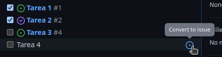
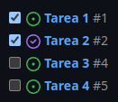
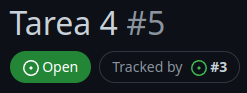

Listas de tareas
En ocasiones, es posible que nos encontremos ante propuestas complejas que si las dividiéramos en unidades más pequeñas serían más fáciles de abordar. Por esta razón, GitHub Issues permite asociar listas de tareas a las propuestas. Vamos a ver cómo hacerlo.
Al finalizar, sabrá:
-
Qué es una lista de tareas y cómo crearla.
-
Cómo crear propuestas compuestas.
-
Cómo crear propuestas de tarea.
Introducción
En ocasiones, podemos tener propuestas complejas, ya sea porque son intelectualmente difíciles, largas en su tamaño o que pueden requerir varios días de desarrollo. En estos casos, la utilización de la máxima de divide y vencerás es muy útil. La idea es descomponer la tarea en unidades más pequeñas y manejables.
El divide y vencerás, también conocido como dividir para reinar o divide y domina, es una máxima utilizada, por desgracia, en política. En la antigüedad, fueron ampliamente utilizadas por Julio César y Napoléon; actualmente, se sigue aplicando. Lo que se esconde detrás de esta estrategia es dividir a las masas para que no puedan reunirse en pos de un objetivo común, en definitiva, el bien de todos a pesar de nuestras diferencias. Busca crear disputas y controversias entre las distintas partes con pensamientos diferentes, contribuyendo al debilitamiento y deterioro de las relaciones entre ellas, dificultando, así, las alianzas o, en nuestro tiempo, el análisis objetivo de las acciones políticas realizadas por nuestros representantes políticos. Si las partes batallan o se insultan entre ellas, se encuentran ocupadas y entretenidas y ya no se centran en analizar objetivamente lo que hacen sus representantes y sus consecuencias.
En una propuesta, podemos crear lo que se conoce formalmente como una lista de tareas (tasklist), una enumeración de tareas necesarias para llevar a cabo el todo de una manera más manejable. La propuesta que se divide en tareas la conoceremos formalmente como propuesta compuesta (composite issue). Mientras que a una propuesta que representa una determinada tarea de una compuesta, como propuesta de tarea (task issue o tracked issue).
Definición de una lista de tareas
En una propuesta compuesta, sus tareas se indican, en su definición, mediante las sintaxis especiales siguientes:
- [ ] título de la tarea que no tiene asociada una propuesta
- [ ] #númeroDePropuestaDeTareaEnElRepositorioActual
Observe que cada tarea se enumera en un elemento de lista precedido por - [ ].
Así, GitHub sabe que la propuesta es compuesta y tiene una lista de tareas.
Los espacios son muy importantes.
En primer lugar, existe uno después del guion (-), otro entre los corchetes y otro después del corchete ].
Cuando no se ha llevado a cabo ninguna tarea, GitHub Issues mostrará el número de tareas que tiene la tarea compuesta junto al estado de la propuesta. Ejemplo:
Ahora, si ya tiene tareas terminadas, mostrará el número de tareas terminadas además del total:
Para indicarle que una tarea está terminada, hay que usar - [x] en vez de - [ ].
En el siguiente ejemplo, GitHub considerará que tenemos dos tareas terminadas y una pendiente:
- [x] Primera tarea
- [x] Segunda tarea
- [ ] Tercera tarea
Creación de una propuesta de tarea
Si tenemos una propuesta compuesta por varias tareas, podemos crear fácilmente una propuesta para una determinada tarea. Para ello, es necesario que esa tarea no tenga asociada una propuesta ya:
-
Ir a la propuesta compuesta.
-
Poner el cursor encima de la tarea de la que queremos crear su propuesta. Esto mostrará una pequeña diana que al poner el cursor encima mostrará el texto Convert to issue:

-
Hacer clic en la diana Convert to issue para crear su propuesta de tarea.
Esto hace dos cosas. En primer lugar, crea la tarea. Y en segundo lugar, cambia el elemento de la tarea para que ahora esté asociada a la propuesta que acaba de crear; así, ya no tenemos que hacerlo nosotros mismos:

Y la lista que inicialmente era:
- [x] #1
- [x] #2
- [ ] #4
- Tarea 4
Se habrá actualizado automáticamente a:
- [x] #1
- [x] #2
- [ ] #4
- [ ] #5
GitHub nos informa que estamos ante una propuesta de tarea mediante un texto como Tracked by #número:

Se muestra el identificador de la propuesta compuesta y si hacemos clic en el número indicado nos llevará a ella.